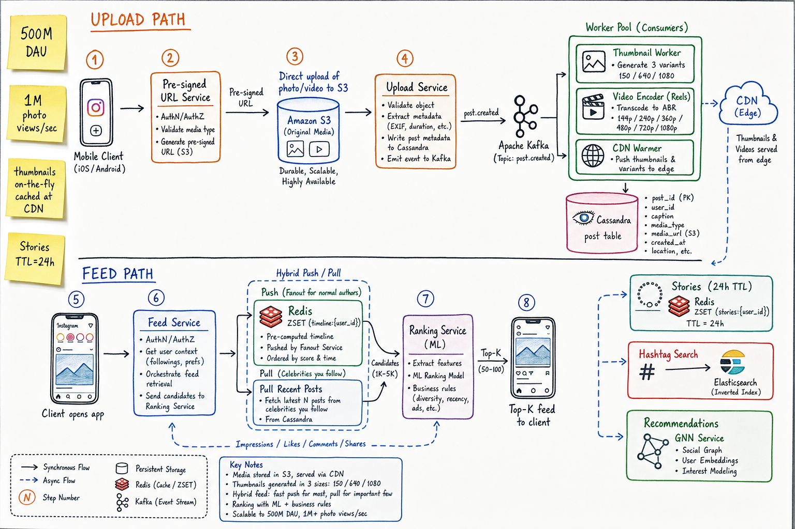
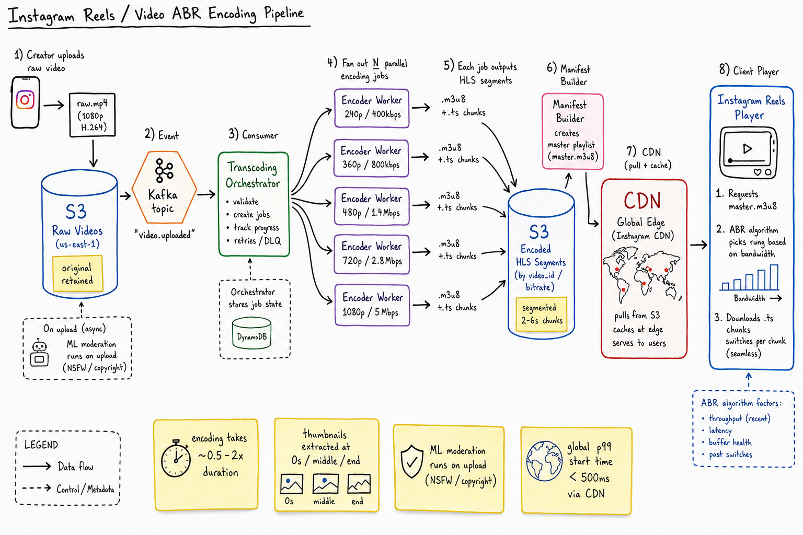
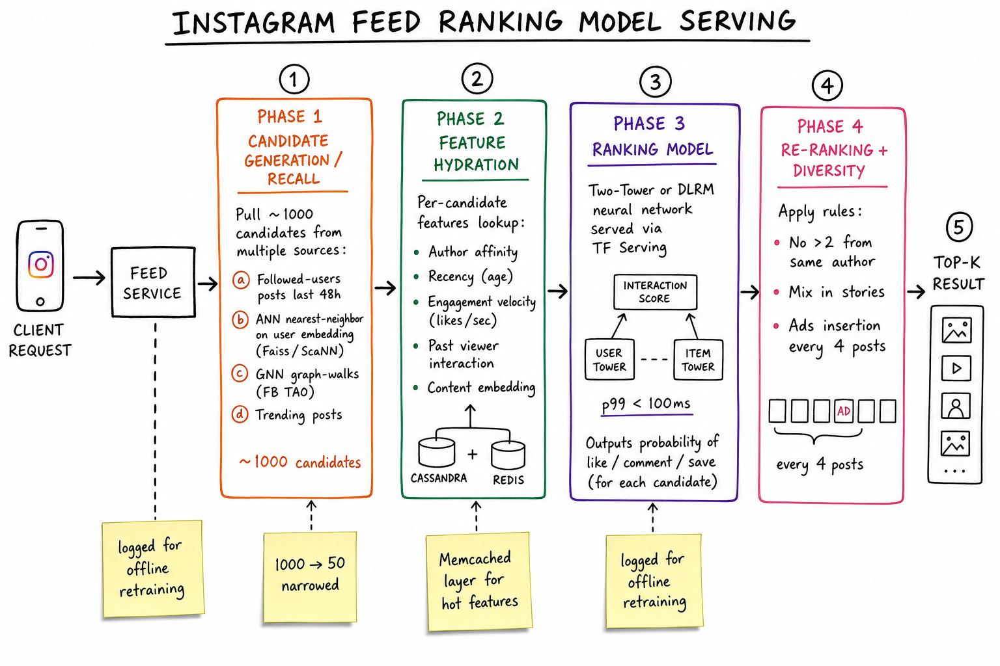

Instagram News Feed // HLD
2B MAU, 500M DAU, 100M posts/day, 1M photo views/sec. Direct-to-S3 upload via presigned URL, Kafka-fan-out into thumbnail + ABR encoder workers, hybrid push/pull feed like Twitter, ML-ranked Top-K with Two-Tower / DLRM models, Stories on 24h TTL, hashtag search via Elasticsearch.

Whiteboard HLD. Upload path: client gets presigned URL → direct upload to S3 → Upload Service writes metadata to Cassandra → emits Kafka post.created. Worker pool consumes: thumbnail generation (3 variants), video ABR encoder (for Reels), CDN warmer. Feed path: client → Feed Service does hybrid push/pull (read Redis ZSET pushed timeline + pull recent celeb posts) → Ranking Service (ML) returns Top-K. Stories on Redis with TTL 24h. Hashtag search via Elasticsearch. Recommendations from GNN service.
01 — Requirements
Functional
- Post photos / videos with caption, location, hashtags
- Follow users; view their posts
- Home feed (people followed + recommendations, ranked)
- Stories (24h ephemeral content)
- Reels (short-form vertical video)
- Search by hashtag, user, or location
- Like, comment, save, share
Non-Functional
- Read-heavy: ~100:1 read/write; design for read scale
- Low-latency feed: p99 < 250ms server-side; under 1s perceived
- CDN-served media: 99% of bytes never touch our origin
- Eventual consistency on feed and counters (likes can lag a few seconds)
- Durable post content; no loss of photos / videos
- 500M DAU; 1M photo views/sec; 100M posts/day
01a — Core Entities
| Entity | Key Fields | Notes |
|---|---|---|
| User | user_id, handle, follower_count, following_count, is_private, profile_pic | Public/private flag gates feed eligibility. |
| Post | post_id, author_id, type (PHOTO/VIDEO/CAROUSEL/REEL), caption, hashtags[], location, media_refs[], created_at | Stored in Cassandra. Partition by author_id; clustering by created_at desc. |
| Media Object | media_id, owner_id, mime, original_url (S3), variants[(size,url)], duration? | Variants = thumbnails for photo, ABR ladder for video. |
| Follow Edge | (follower_id, followee_id, status), TAO graph | Approve-required for private accounts. |
| Timeline / Feed | (user_id, post_id), Redis ZSET capped ~500 | Pushed timeline for non-celeb authors followed. |
| Story | story_id, owner_id, media_ref, expires_at = created_at + 24h, viewer_set | TTL purge after 24h. |
| Engagement | (post_id, user_id, type=LIKE|SAVE|COMMENT), ts | Counter cached on post; full log in Cassandra + Kafka for ML. |
| Hashtag | hashtag → post_id list (recent), Elasticsearch index | Used for search + discovery. |
| User Embedding | user_id → vector[256] | For ANN retrieval & ranking; refreshed daily. |
01b — API Design
Upload & post
POST /media/upload-url
body: { mime, size }
-> { upload_url (S3 presigned, 5min TTL), media_id }
POST /posts
Idempotency-Key: ...
body: { media_ids[], caption, location?, tagged_users[] }
-> 201 { post_id, created_at }
Feed read
GET /feed/home?cursor=...&limit=20
-> { items: [{post, author, viewer_engagement}], next_cursor }
GET /users/{id}/posts?cursor=...
GET /stories # all friends' active stories
GET /reels/discover # algorithmic Reels feed
Engagement & graph
POST /posts/{id}/like
DELETE /posts/{id}/like
POST /posts/{id}/comments { text }
POST /follows/{user_id}
GET /search?q=...&type=user|hashtag|location
Direct-to-S3 upload is the key API decision: our servers never see the bytes. Client uploads via presigned URL, then makes a thin REST call to/postswith themedia_id. Saves bandwidth at our edge and lets clients show fast progress bars.
02 — Estimation
Users: 2B MAU, 500M DAU Posts/day: 100M -> ~1200/sec avg, peak ~10K/sec Photo views/sec: ~1M/sec Avg followers: ~150 (median much lower, long tail) Media: Avg photo: ~500KB original Avg video: ~5MB compressed Per-day uploaded: 100M * 1MB avg = 100 TB/day (mostly photos) After variants (3x): ~250 TB/day to store Lifetime: ~5 years -> ~500 PB of S3 Feed cache: 500M DAU * 500 post_ids * 8 bytes ~= 2 TB hot Redis Cluster + Memcached Bandwidth: 1M photo views/sec * 200KB (CDN-delivered) = 200 GB/s egress Almost entirely served by CDN; origin gets ~5% ML serving: Ranker p99 budget: 100ms Candidate pool: ~1000 -> top 50 per scroll page
03 — Why It's Hard
- Heavy media: photos are 1000x larger than tweets; bandwidth dominates.
- Variant explosion: every photo needs ~3 sizes; every video an ABR ladder of 4-6 bitrates.
- Fan-out + celebrities — same problem as Twitter but with bigger payloads.
- Stories add a 24h-TTL data type orthogonal to posts.
- Ranking is the product: chronological is the fallback; ML decides what 99% of users see.
- Cold-start discovery: recommend posts from users you don't follow yet (Explore / Reels).
- Privacy gates: private accounts, blocked users, geographic restrictions — checked at every fan-out and read.
04 — Architecture
Client (iOS/Android/Web)
|
v
+------------+
| API GW |
+------------+
|
+-----+-----------+----------+-----------+
| | | | |
v v v v v
+-----+ +-----+ +--------+ +--------+ +--------+
|Upload| |Post | | Feed | | Story | | Search |
|Svc | |Svc | | Svc | | Svc | | Svc |
+-----+ +-----+ +--------+ +--------+ +--------+
| | | | |
v v v v v
+-----+ +-----+ +--------+ +--------+ +-------------+
| S3 | |Cass.| | Redis | | Redis | | Elastic- |
| | |posts| | timeln | | stories| | search |
+-----+ +-----+ +--------+ +(TTL 24h)+ +-------------+
^ ^
| |
+------------------+ +---------------+
| Fanout Service | | Ranking Svc |
| (push to follower| | (TF Serving) |
| ZSETs; pull list| +---------------+
| for celebs) | ^
+------------------+ |
^ +---------+
| |Features |
+-----------+ | (Mem- |
| Kafka | | cached) |
| post.creat| +---------+
+-----------+
|
+----------+------------+----------+
| | | |
v v v v
Thumb Video CDN ES Indexer
Worker Encoder Warmer
(3 sizes) (ABR ladder)
| | |
v v v
S3 variants CDN edge
GNN Recommender (offline + online); ANN (Faiss/ScaNN) for retrieval
05 — Upload Pipeline
POST /media/upload-url with mime + size. Service returns S3 PUT URL valid for 5 min.POST /posts with the media_id. Upload Service writes Cassandra row with status=PENDING_PROCESSING.post.created → consumers: Thumbnail Worker, Video Encoder (Reels only), CDN Warmer, ES Indexer, Fanout Service.Decoupling upload (sync, fast) from processing (async, slow) is the key. The user sees "Posted!" instantly; thumbnails appear in the world over the next few seconds.
06 — Feed Generation (Hybrid Push/Pull)
Same playbook as Twitter (see Twitter timeline hybrid).
- Push for authors with <~500K followers: at post time, ZADD into each follower's
timeline:{user_id}ZSET. - Pull for celebrities: skip fan-out; at read time, query the latest posts from celebs the viewer follows.
- Merge by timestamp at read time; feed candidates total ~1000.
- Cap ZSET at 500 (~few weeks of normal use); older posts fetched from Cassandra by author_id range query when user scrolls deep.
Why Cassandra for posts?
- Append-heavy, immutable rows — LSM is perfect.
- Time-range queries on (author_id, created_at) for user profile and pull-fallback are O(K) with proper clustering.
- Replication factor 3, eventually consistent reads — eventual is fine for feeds.
- See Cassandra deep dive.
07 — Thumbnail Variants
Each uploaded photo must be served in multiple sizes: feed (640px), grid (320px), thumbnail (150px), and HD on tap (original).
Generation strategies
- Eager: worker generates all variants on upload, stores in S3. Pros: predictable read latency. Cons: storage cost for variants that may never be requested.
- Lazy / on-the-fly at CDN: a single original; CDN edge function generates and caches the requested size on first miss. Pros: cheap storage. Cons: cold-cache latency spike.
- Hybrid (Instagram's actual): eagerly generate 3 most-common sizes; on-the-fly for the rest. Best of both.
Worker pool
Kafka post.created -> Thumb Worker
| uses libvips / ImageMagick
| writes variants/{post_id}/{size}.jpg to S3
| updates Cassandra: media.variants[]
| warms CDN with HEAD requests
Variants live behind the CDN; ~95% cache hit. Origin sees only first-touch and uncommon sizes.
08 — Reels / ABR Video Encoding

Creator uploads raw mp4 to S3. Kafka event triggers a Transcoding Orchestrator which fans out parallel encoder jobs producing an HLS bitrate ladder (240p/360p/480p/720p/1080p) as segmented .ts chunks + .m3u8 playlist. Manifest Builder creates master playlist; CDN pulls + caches at the edge. Player picks the rung based on bandwidth and switches per-chunk. ML moderation runs async on upload (NSFW / copyright).
ABR (Adaptive Bitrate) basics
- Video split into 2-6s segments. Each segment available at multiple bitrates.
- Master playlist lists all variants; per-bitrate playlists list segments.
- Client measures throughput, latency, buffer health; picks bitrate per segment.
- Switching is seamless (segments are independently decodable).
Pipeline cost
- Encoding time ~0.5-2x video duration on GPU/specialized encoders.
- Parallelize per-rung; orchestrator tracks job state in DynamoDB / Postgres.
- DLQ for failed jobs; retries with backoff.
- Storage: 1 original + ~5 ABR rungs in HLS = 4-6x storage. Trade-off for global start-time < 500ms via CDN.
09 — Stories (24h TTL)
Stories are a separate data type with different lifecycle than posts.
- Storage: Redis ZSET
stories:{user_id}+ S3 for the media. - Each story has
expires_at = created_at + 24h; lazy TTL cleanup. - Pre-fetch optimization: when app opens, fetch story manifests for all followed users in one batch → show colored ring.
- View tracking:
seen:{story_id}Set membership; surface "seen by" list to author. - After 24h: story disappears from feed; archived to user's private archive (still readable by owner).
Stories' ephemerality changes the data model: ZSET + TTL beats Cassandra + range scan because the working set is naturally bounded to 24 hours.
10 — Ranking & Recall

Four-phase pipeline: (1) Candidate Generation pulls ~1000 candidates from multiple sources — followed users' recent posts, ANN nearest-neighbors on user embedding, GNN graph walks, trending. (2) Feature Hydration loads per-candidate features from Memcached. (3) Ranking Model (Two-Tower or DLRM) scores all candidates in <100ms p99. (4) Re-ranking applies diversity rules and inserts ads every ~4 posts. Top-K returned to client.
Recall sources
- Followed-users recent posts (last 48h) — primary, the "social" signal.
- ANN over user embedding (Faiss / ScaNN) — semantic similarity to past engaged content.
- GNN graph walks on the social graph — friend-of-friend posts.
- Trending bucket — high-velocity posts globally / locally.
Model serving
- Two-Tower NN: user-tower precomputed (refresh daily); item-tower computed at ingest time; inner product = score.
- DLRM (Deep Learning Recommendation Model, Meta) for full ranking.
- Features in Memcached for hot reads; refreshed by feature workers.
- p99 model latency < 100ms; total feed latency < 250ms.
Diversity & rules
- No more than 2 consecutive posts from same author.
- Mix in Stories indicator, Reels rail, ad every ~4 posts.
- Negative feedback (hide, mute) immediately weights down author affinity.
11 — Hashtag & User Search
- Kafka
post.created→ ES Indexer → Elasticsearch index. Fields: caption, hashtags, location, author. - Query:
GET /search?q=#sunset&type=hashtag→ ES top-K post_ids by relevance + recency. - User-typeahead: separate Redis sorted set of usernames by popularity prefix.
- Per-hashtag landing pages cached in Redis (top posts last 24h, ranked).
- See Elasticsearch deep dive.
12 — Scaling
- S3 + CDN absorb the bandwidth tsunami; our edge sees a fraction of total bytes.
- Cassandra sharded by author_id for posts; by user_id for engagement. RF=3 multi-DC.
- Redis Cluster for timelines, stories, presence, hot post counters.
- Memcached for hot reads of feature vectors and embeddings.
- Kafka as the event spine: 1 topic for post.created, 1 for engagement, 1 for moderation.
- Geographic replication: per-region read replicas, async cross-region sync for global content.
- TAO-style graph cache for follow edges; see TAO deep dive.
- Worker autoscaling: encoder pool scales with Kafka lag; thumbs scale with photo upload rate.
13 — Edge Cases
- Post created but processing failed: status stays PENDING; retry encoder; if DLQ, surface "couldn't post" to author with retry.
- Private account: follower must be in approved-followers set; checked at every fan-out write and every feed read.
- Blocked user: filter at read hydration (cheap). Don't try to retroactively un-fan-out.
- NSFW / copyright: moderation worker flags → post hidden + author notified. False positives via human review queue.
- Hot post (viral): the engagement counter row is a hot key — shard the counter across N Redis keys, sum at read.
- Story expires mid-view: client allowed to finish current playback; next refresh removes it.
- CDN cold-miss for unusual variant size: 1st request slow; subsequent fast (edge caches).
- Account deletion: async sweep across Cassandra, S3, Redis, ES — eventual but reliable (Kafka tombstone fan-out).
- Region failure: degraded mode — feeds served stale from cache; uploads queued in Kafka.
14 — Real-World Equivalents
| System | Notes |
|---|---|
| Cassandra for posts, TAO for graph, Memcached for hot reads, Haystack for photos historically | |
| Facebook News Feed | Multifeed aggregator + ranker; same TAO + Memcached substrate; F4 cold storage |
| TikTok For You | Pure ML pull (no social fan-out); same ABR pipeline; recommender is the product |
| Image-heavy; Pixie graph for related-pin recommendations; smart-cropping image variants | |
| Snapchat | Strong on Stories & ephemerality model; AR effects pipeline at upload |
| YouTube Shorts | Same Reels-style ABR + recommender, on top of YouTube's transcoding fleet |
15 — Interview Q&A
Why direct-to-S3 upload instead of through your servers?
POST /posts for metadata, which is <1KB.How is the feed computed — push or pull?
How do thumbnails get generated for billions of photos?
post.created. Each consumer reads the original from S3, uses libvips for fast image resize, writes 3 variants (150/640/1080) back to S3, and warms the CDN. ~95% of variant requests are hits at the edge. Less-common sizes (e.g. for an old browser) generated on-the-fly at CDN edge function.Walk me through Reels video encoding.
Why eventual consistency for feeds?
How does Stories' 24h TTL work?
stories:{user_id} with score = expires_at. Lazy TTL: at read time we filter out entries where expires_at < now. A background sweeper periodically prunes (ZREMRANGEBYSCORE) to keep memory bounded. The media in S3 has a lifecycle rule to auto-delete after 25h. View tracking in a separate Set.